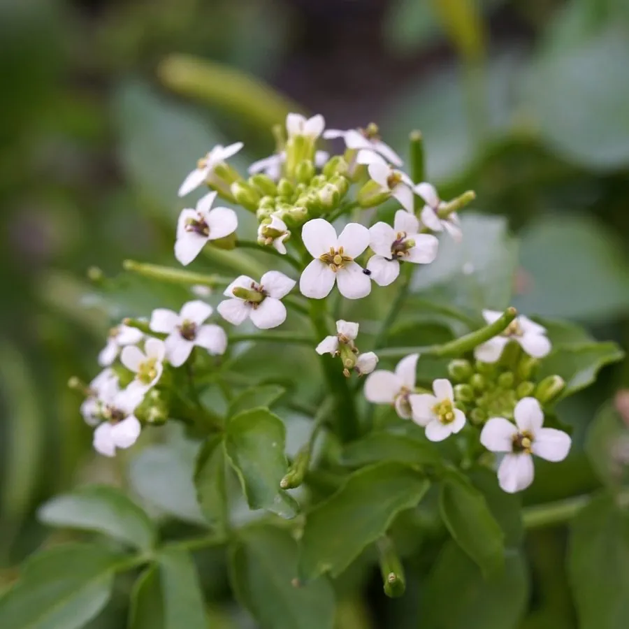

农作物与经济植物 · 植物界
豆瓣菜 Nasturtium officinale

十字花科多年生水生草本，茎匍匐、羽状复叶翠绿，是粤港煲汤与沙拉常用的水生蔬菜，喜清凉流动的浅水。
- 分类
- 门被子植物门纲木兰纲目十字花目科十字花科属豆瓣菜属
- 栖息环境
- 清澈流动的溪流、水沟与浅水田，喜凉爽、忌高温死水
- 地理分布
- 原产欧洲与西亚，中国华南广泛栽培，世界温带地区有引种
- 保护级别
- 暂无评估；野生居群在欧洲部分国家因水体污染减少
物种志
豆瓣菜为十字花科豆瓣菜属多年生水生草本，株高 20–60 厘米，茎匍匐或浮水，节上生根。奇数羽状复叶，小叶 3–7 枚，卵形或近圆形，深绿色，有辛香。总状花序顶生，花小，白色，花期 4–6 月；长角果细长，种子细小。
豆瓣菜原产欧洲与西亚，19 世纪传入中国，现广东、广西等地广泛栽培，是粤港“西洋菜煲猪骨汤”的主角。它喜清凉、流动、洁净的浅水，适宜水深 5–15 厘米，水温 15–25 ℃，忌高温与死水，夏季需遮阴降温。茎叶富含维生素与矿物质，可炒食、做沙拉或榨汁。因生食可能携带寄生虫与细菌，水生栽培的豆瓣菜建议充分加热后食用；以茎段扦插繁殖，生长极快。
形态与习性
- 原产地欧洲与西亚
- 株高20–60 厘米，茎匍匐浮水
- 水深适宜水深 5–15 厘米，需流动清水
- 水质喜清凉洁净软水，水温 15–25 ℃
- 用途煲汤、炒食、沙拉，富含维生素
- 注意水生栽培，生食有寄生虫风险，宜熟食
趣味知识
- 粤港人家冬天必喝的“西洋菜汤”，用的就是豆瓣菜的嫩茎叶。
- 它必须种在流动的清水里，死水或高温会使茎叶变黄、风味变苦。
- 豆瓣菜生食有感染寄生虫的风险，水生蔬菜最好焯水或煮熟。
- 它生长极快，一段茎丢进浅水沟里几天就能生根蔓延。